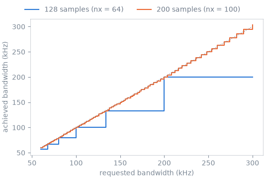
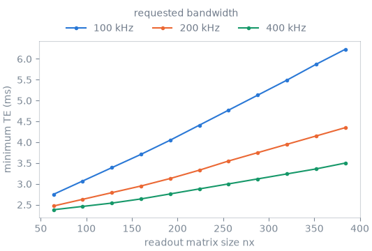

Note
Go to the end to download the full example code.
Protocol resolution for a 2D gradient echo#
The scope of this notebook is to resolve prescriptions of a two-dimensional gradient echo the way a design call does for the scanner UI, and to show what the resolved protocol depends on: the receiver bandwidth a readout can realize on the sampling rasters, and the shortest echo time the readout admits.
A request is resolved by designing the sequence under the scanner limits and
reading back the values the design achieved, as described in
Protocol resolution. The sequence is pypulseqpp’s shipped
Gre2DApp, bound to five protocol entries.
Outline:
Scanner sequence. The binding of the application to the protocol.
Receiver bandwidth. Requested and achieved bandwidth for two readout lengths.
Shortest echo time. The Minimum preset against matrix size and bandwidth.
Infeasible requests and repeated resolution. The reply to a prescription the design refuses, and to a resolved protocol sent back.
Scanner sequence#
The binding maps interpreter parameter names to init_sequence arguments.
Times are exchanged in integer microseconds, the field of view in mm, and the
Minimum preset of TE and TR requests the shortest time the design admits.
The application records the echo time, repetition time and receiver
bandwidth its design achieves, and the reply carries those values.
import numpy as np
import pypulseqpp as pp
from pypulseqpp.sequences.sequence.gre2D_sequence import Gre2DApp
from pulserver.design import FloatParam, IntParam, ScannerSequence, TimeParam
from pulserver.protocol import TEPreset, TRPreset, UIParam, format_listing
class Gre2D(ScannerSequence):
app = Gre2DApp
ui = {
UIParam.TE: TimeParam(
"te", range_min=1000, range_max=80000, presets={TEPreset.MINIMUM: None}
),
UIParam.TR: TimeParam(
"tr", range_min=1000, range_max=5_000_000, presets={TRPreset.MINIMUM: None}
),
UIParam.BANDWIDTH: FloatParam(
"readout_bandwidth_hz", unit="Hz", range_min=1e3, range_max=1e6
),
UIParam.FOV: FloatParam(
"fov_x", unit="mm", scale=1e-3, range_min=50.0, range_max=500.0
),
UIParam.NX: IntParam("n_x", range_min=32, range_max=512, range_incr=2),
}
gre = Gre2D()
print(format_listing(gre.listing()), end="")
[NimPulseqGUI Protocol]
TE: int|dropdown|8000|1000|80000|1|us|-2
TR: int|dropdown|250000|1000|5000000|1|us|-1
bandwidth: float|typein|250000.0|1000.0|1000000.0|1.0|Hz
fov: float|typein|220.0|50.0|500.0|1.0|mm
nx: int|typein|128|32|512|2|
fov_offset_x: float|off|0.0|-1000.0|1000.0|0.1|mm
fov_offset_y: float|off|0.0|-1000.0|1000.0|0.1|mm
fov_offset_z: float|off|0.0|-1000.0|1000.0|0.1|mm
fov_rotation_11: float|off|1.0|-1.0|1.0|1e-06|
fov_rotation_12: float|off|0.0|-1.0|1.0|1e-06|
fov_rotation_13: float|off|0.0|-1.0|1.0|1e-06|
fov_rotation_21: float|off|0.0|-1.0|1.0|1e-06|
fov_rotation_22: float|off|1.0|-1.0|1.0|1e-06|
fov_rotation_23: float|off|0.0|-1.0|1.0|1e-06|
fov_rotation_31: float|off|0.0|-1.0|1.0|1e-06|
fov_rotation_32: float|off|0.0|-1.0|1.0|1e-06|
fov_rotation_33: float|off|1.0|-1.0|1.0|1e-06|
[NimPulseqGUI Protocol End]
The scanner limits are those a PSD host process sends with each call. The rasters are stated explicitly because the achieved bandwidth depends on them.
Receiver bandwidth#
The readout samples at a dwell time that is a multiple of the ADC raster, and its duration, the number of samples times the dwell time, must be a whole number of gradient raster periods. The dwell time is the first that satisfies both, searched upward from the requested one, and the achieved bandwidth is its reciprocal: a request between two achievable bandwidths resolves to the lower of them. With twofold readout oversampling, a 64-column matrix is read with 128 samples and a 100-column matrix with 200.
For 128 samples, a duration that is a multiple of 10 µs requires a dwell time that is a multiple of 2.5 µs, so only 400, 200, 133, 100, 80 kHz and so on are achievable. For 200 samples, every multiple of the 100 ns ADC raster is achievable.

The reply always carries the achieved value, so the scanner UI shows the bandwidth that will be played rather than the one typed in.
for bw in (150e3, 190e3):
reply = gre.validate(system, {"nx": 64, "bandwidth": bw})
print(
f"requested {bw / 1e3:6.1f} kHz -> achieved {reply.values['bandwidth'] / 1e3:6.1f} kHz"
)
requested 150.0 kHz -> achieved 133.3 kHz
requested 190.0 kHz -> achieved 133.3 kHz
Shortest echo time#
The Minimum preset of TE is resolved to the echo time of the design, in integer microseconds. The echo is placed after the excitation, the slice-selection rephaser and the readout prewinder, and before it the readout acquires half of its samples. The shortest echo time therefore grows with the number of samples and with the dwell time, that is, with matrix size and inversely with bandwidth.
matrices = np.arange(64, 385, 32)
bandwidths = (100e3, 200e3, 400e3)
minimum_te = {
bw: [
gre.validate(
system, {"TE": TEPreset.MINIMUM, "nx": int(nx), "bandwidth": bw}
).values["TE"]
for nx in matrices
]
for bw in bandwidths
}

Infeasible requests and repeated resolution#
A prescription the design cannot realize is invalid. The reply carries the request unchanged and the error the application raised, which the interpreter shows to the operator.
reply = gre.validate(system, {"TE": 1500, "nx": 256})
print(reply.valid)
print(reply.info)
False
the requested TE of 1.500 ms is shorter than the 3.550 ms this readout can achieve
A valid reply carries the resolved protocol at the precision a scanner control variable stores. Sending it back resolves to the same protocol, which is what lets a design be identified by its resolved protocol (Designs and the design store).
first = gre.validate(system, {"TE": TEPreset.MINIMUM, "nx": 192, "bandwidth": 150e3})
again = gre.validate(system, first.values)
print(first.values)
print(again.values == first.values, f"scan time {first.duration:.1f} s")
{'TE': 3580, 'TR': 250000, 'bandwidth': 133333.0, 'fov': 220.0, 'nx': 192, 'fov_offset_x': 0.0, 'fov_offset_y': 0.0, 'fov_offset_z': 0.0, 'fov_rotation_11': 1.0, 'fov_rotation_12': 0.0, 'fov_rotation_13': 0.0, 'fov_rotation_21': 0.0, 'fov_rotation_22': 1.0, 'fov_rotation_23': 0.0, 'fov_rotation_31': 0.0, 'fov_rotation_32': 0.0, 'fov_rotation_33': 1.0}
True scan time 36.0 s
Total running time of the script: (0 minutes 2.073 seconds)